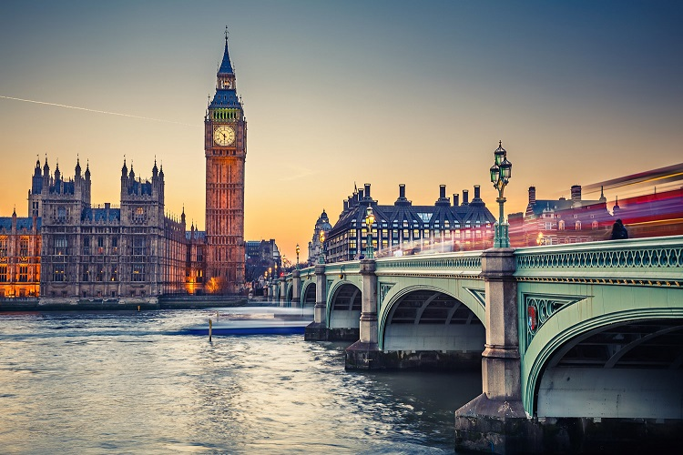
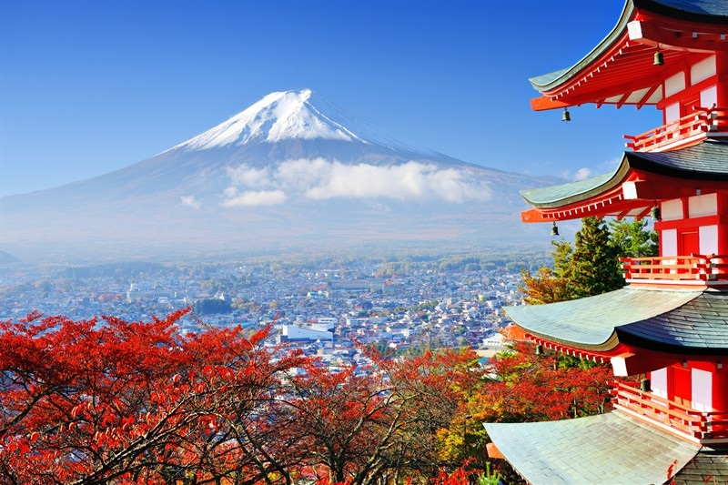

London is the capital and largest city of both England and the United Kingdom.
Standing on the River Thames in the south-east of England, at the head of its 50-mile
(80 km) estuary leading to the North Sea, London has been a major settlement for two millennia.
Londinium was founded by the Romans. The City of London (colloquially known as the Square Mile)
retains boundaries that follow closely its medieval limits.


Paris is the capital and most populous city of France, with an area
41 square miles and an official estimated population of over two million
residents (as of 2019). Since the 17th century, Paris has been one of Europe's
major centers of finance, diplomacy, commerce, fashion, science, and the arts.
Tokyo has served as the Japanese
capital since 1869. As of 2018, the Greater Tokyo Area is the most populous
metropolitan area in the world. Tokyo was formerly named Edo in 1603
by Shogun Tokugawa - it was renamed Tokyo
in 1868 by emperor Meiji. Tokyo is often referred to as a city but it is officially
a "metropolitan prefecture", which combines the elements of a city
and a prefecture, a characteristic unique to Tokyo.
